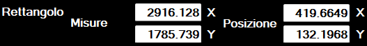
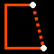
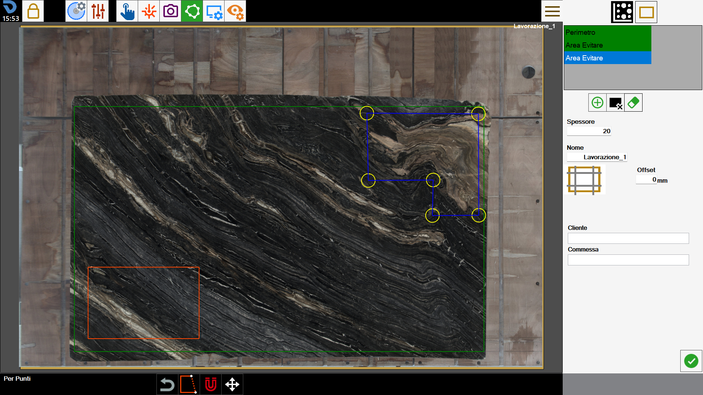
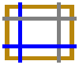

To be able to function, the program must know the edge of the slab on which to work. This function allows to trace the perimeter.

Perimeter creation mode
The program allows the operator to draw the perimeter using one of the following modes:
 | Rectangle mode |
Points mode |
NOTEAt every moment of the perimeter creation, it is possible to pass from a mode to the another.Passing from 'for points' mode to 'rectangle' mode, the perimeter will be converted into rectangle, and all the polygon vertices will be lost.Confirmation will be requested to be able to proceed in this operation.
Rectangle
This mode allows to create perimeters from rectangular shape.
To change the size and position of the rectangle it is possible to drag the yellow circles on the working area, or by modifying the values indicated in the bar below.

Measures | Dimensions on axis X and on axis Y of the perimeter. |
Location | Coordinates of the bottom left vertex of the rectangle with respect to the bottom left vertex of the bench. |
For points
This mode allows to create polygons from the arbitrary polygonal shape.
To do it, the operator can arrange the points that form the perimeter in the desired positions as shown in the figure below.

In this mode, it is possible to interact with the perimeter using the following buttons:
 | Perimeter closing |
 | Removal last point |
Once closed, the perimeter will become of color blue, and its vertices indicated by yellow circles.
During the piece creation phase and in the presence of a closed perimeter, it will always be possible to move the vertices on the working area to improve the precision.
Bottom bar
The operator can interact with a perimeter present on the working area using the buttons located in the lower section of the screen.
 | Magnet on laser cross |
Perimeter displacement |
Create a new perimeter
The program allows to create more than one perimeter on which to arrange the pieces for the working.
Furthermore, it is possible to define areas on the slab on which it is not possible to insert any piece.
Perimeter | |
 | Avoid area |
 | Delete perimeter |
The perimeters created are visible in the list in the upper right. To modify a perimeter, simply select it on the work area or the corresponding item within the list.
The currently selected perimeter has the blue contours and the vertices in yellow, while the remaining can be distinguished also in base to the color: green for the perimeters of the slabs, orange for the area to be avoided.

From this screen it is possible to add some relief cuts to the slab.
 | Heading of the slab |
To complete the creation of the perimeter, the operator is required to insert some information regarding the work that must be carried out.
Thickness | The operator must indicate the thickness of the slab present on the work bench. |
Name | Name to assign to the slab working. |
Customer | The customer's name is indicated for which the job is carried out. It is an optional field. |
Job | A job identifier is indicated. It is an optional field. |
NOTESlab thickness and working name are mandatory fields to insert before confirming the perimeter.Conversely, is not necessary to fill the information regarding the additional properties below.
Areas to avoid
The avoid areas are zones of the slab that the operator wishes not to make available for the positioning of the pieces on the slab.
The reasons for this can be the presence of breaks on the material, of not aesthetic veins or the necessity to preserve some parts of the slab.
They are represented as blue color zones inside the working area.

When you utilize the functionality of Nesting, the pieces are arranged so as not to occupy any of these areas.